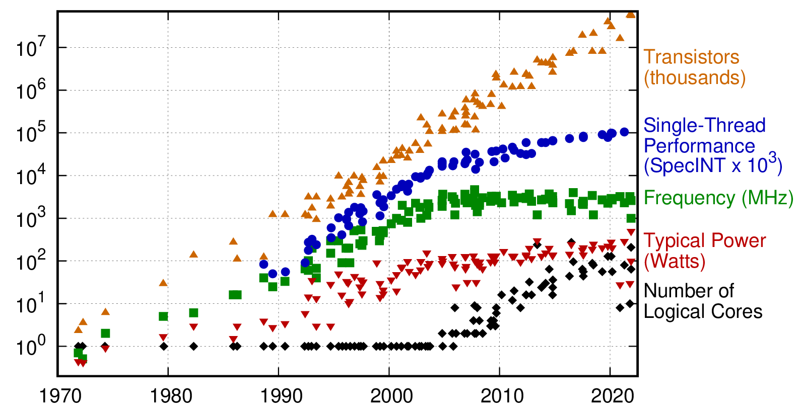
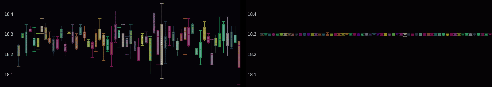
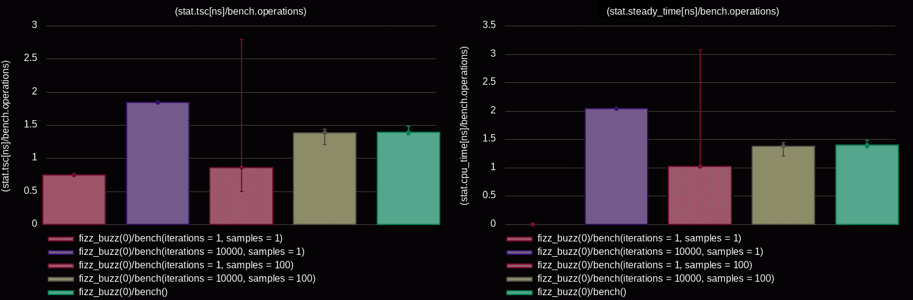
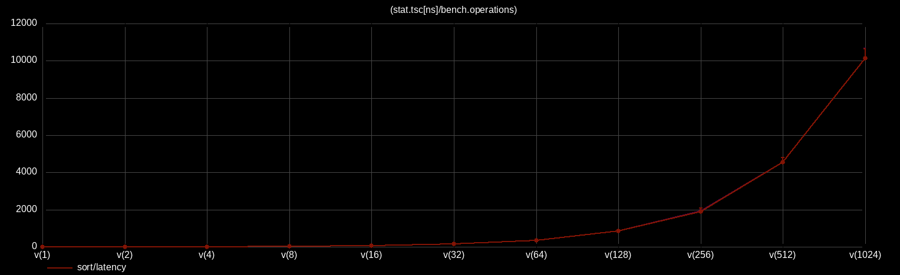
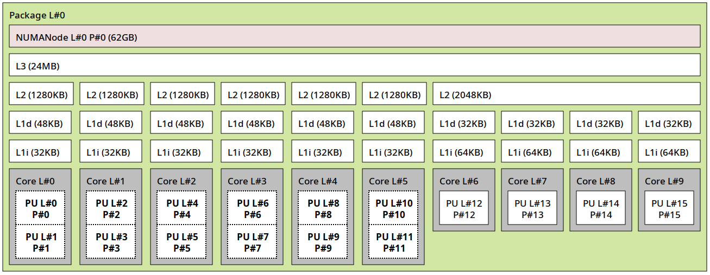
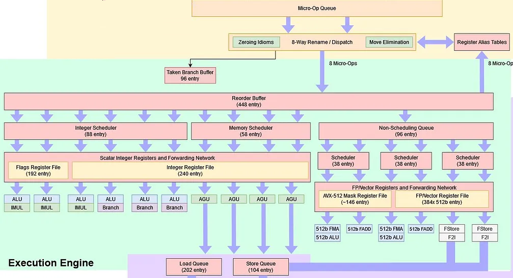
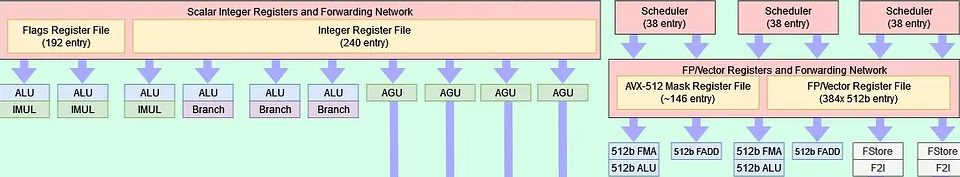
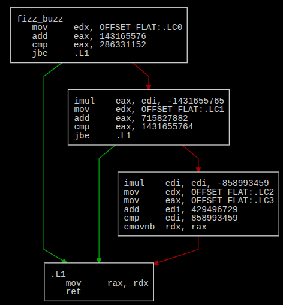
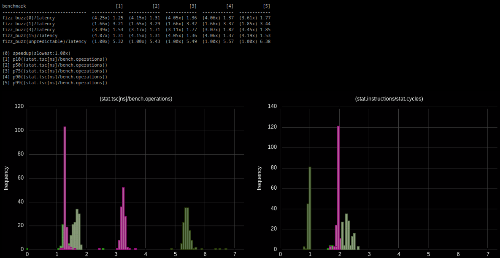

<!doctype html>
<html>
  <head>
    <meta charset="utf-8">
    <meta name="viewport" content="width=device-width, initial-scale=1.0, maximum-scale=1.0, user-scalable=no">

    <title>Performance Is Not a Number: Avoiding Microbenchmarking Pitfalls</title>

    <link rel="stylesheet" href="reveal.js/css/reveal.css">
    <link rel="stylesheet" href="reveal.js/css/theme/league.css" id="theme">
    <link rel="stylesheet" href="extensions/plugin/line-numbers/line-numbers.css">
    <link rel="stylesheet" href="extensions/css/highlight-styles/zenburn.css">
    <link rel="stylesheet" href="extensions/css/custom.css">

    <style>
      .reveal h1, .reveal h2, .reveal h3, .reveal h4, .reveal h5 { text-transform: none; }
    </style>

    <script>
      var link = document.createElement( 'link' );
      link.rel = 'stylesheet';
      link.type = 'text/css';
      link.href = window.location.search.match( /print-pdf/gi ) ? 'reveal.js/css/print/pdf.css' : 'reveal.js/css/print/paper.css';
      document.getElementsByTagName( 'head' )[0].appendChild( link );

      function set_address(self, remote, local) {
        if (window.location.search.match("local")) {
          self.href = local;
        } else {
          self.href = remote;
        }
      }
    </script>

    <meta name="apple-mobile-web-app-capable" content="yes">
    <meta name="apple-mobile-web-app-status-bar-style" content="black-translucent">
  </head>

  <body>
    <div class="reveal">
      <div class="slides">
          <script type="text/template">
          </script>
          </section>

          <section data-markdown=""
                   data-separator="^====+$"
                   data-separator-vertical="^----+$">
          <script type="text/template">
<!-- .element: data-background-image="images/title.png" data-background-size="100%" -->

<!--<br />-->
<!--<br />-->
<!--<br />-->

<!--<p align="left">-->
<!---->
<!--</p>-->

----

#### Performance - [https://www.intel.com/.../articles/moores-law.html](https://www.intel.com/content/www/us/en/history/virtual-vault/articles/moores-law.html)
<!-- .element: style="text-align:left" -->

<table>
  <tr>
  <td>
  <pre style="font-size:18px">
(~) Frequency
  - Base:  3–5 GHz
  - Boost: 5–6 GHz
  - Overclocked: ~9 GHz<br />
(⬆️) Transistors
  - More Cores
  - More Cache
  - Improved Execution
  - Improved Parallelism
  - ...<br />
</code></pre>
  </td>
  <td>
    
  </td>
</tr>
</table>

```cpp
// https://github.com/karlrupp/microprocessor-trend-data
```
<!-- .element: style="text-align:left; font-size:15px;" -->

----

### Nanosecond count
<!-- .element: style="text-align:left;" -->

```cpp

 // [perf] 4Ghz CPU from 2005 != 4Ghz CPU from 2025

  benchmark                 [0]           [1]                                               [2]
  -------------------- --------  ------------ -------------------------------------------------
  1 cycle execution      1 ± 00   0.25 ± 0.00 ▏
  L1d hit                3 ± 01   0.75 ± 0.25 █░
  L2d hit               12 ± 03   3.00 ± 0.75 ███░░
  branch misprediction  14 ± 10   3.50 ± 2.50 ███░░░
  L3d hit               50 ± 05  10.00 ± 1.25 █████████░░░
  DRAM access          350 ± 20  70.00 ± 5.00 ████████████████████████████████████████████░░░░░
  ...

  [0]: ~cycles // Intel/AMD/Apple
  [1]: (cycles/4Ghz) [ns]
  [2]: cycles ± variability
```
<!-- .element: style="text-align:left; font-size:16px;" -->

----

#### Performance Analysis
<!-- .element: style="text-align:left" -->

```cpp
 └─ System          // OS, I/O, ...
    └── Application // design, algorithms, data structures, ...
      └── µArch     // hardware effects
```

----

### [0] Always measure
<!-- .element: style="text-align:left" -->

```cpp
// "If you can't measure [*] it, you can't improve it"
```

```cpp
 [*] trust, understand, reproduce, ...
```
<!-- .element: class="fragment" data-fragment-index="1" -->

----

#### Always measure - https://www.brendangregg.com
<!-- .element: style="text-align:left" -->

```sh
 └─ System
      bpftrace -e 'tracepoint:syscalls:sys_enter_* { @[probe] = count(); }'
      bpftrace -e 'tracepoint:tcp:tcp_connect { printf("%d", args->dport); }'
```
<!-- .element: style="text-align:left; font-size:19px;" -->

<table>
<tr>
<td></td>
<td></td>
</tr>
</table>

----

#### Always measure
<!-- .element: style="text-align:left" -->

```sh
 └─ System
    └── Application

          vtune -collect hotspots -- ...      # Intel
          AMDuProfCLI --profile -t cpu -- ... # AMD
          xctrace record --template ...       # Apple

          perf probe -x ...
          perf record -g ...

          (gdb) record function-call-history /ilc
          (gdb) run
            1  bar     inst 1,4     at foo.c:6,8
            2  foo     inst 5,10    at foo.c:2,3
            3  bar     inst 11,13   at foo.c:9,10
          (gdb) reverse-step
```

----

#### Always measure - https://perf.wiki.kernel.org
<!-- .element: style="text-align:left" -->

```cpp
 └─ System
    └── Application

          import perf.tool; // https://github.com/qlibs/perf

          int main() {
            perf::tool::linux_perf profiler{"/dev/shm/perf"};

            profiler.start(); // syscall
            // ...
            profiler.stop();  // syscall
          }
```

```sh
        perf stat   --control=fifo:/dev/shm/perf --delay=-1 ...
        perf record --control=fifo:/dev/shm/perf --delay=-1 ...
```

----

#### Always measure - https://llvm.org/docs/XRay.html
<!-- .element: style="text-align:left" -->

```cpp
 └─ System
    └── Application

          function:
            // nop # -fxray-instrument
            ret
            // nop # -fxray-instrument

          int main() {
            // ...
            auto handler = [](int func_id, XRayEntryType entry) {
              if (entry == XRayEntryType::ENTRY) {
                profiler.start();
              } else {
                profiler.stop();
              }
            };
            __xray_set_handler(+handler);
            __xray_patch(); // nop -> jmp &handler
          }
```
<!-- .element: style="font-size:21px;" -->

```sh
        clang++ -fxray-instrument -fxray-function-list=function.txt ...
```
<!-- .element: style="font-size:18px;" -->

----

#### https://valgrind.org/docs/manual/cl-manual.html
<!-- .element: style="text-align:left" -->

```cpp
 └─ System
    └── Application

          import perf.tool; // https://github.com/qlibs/perf

          int main() {
            perf::tool::callgrind profiler{"simulation"};

            while (true) {
              profiler.reset();
              profiler.start();

              if (trigger) { // fast-path
                // action

                profiler.stop();
                profiler.flush();
              }
            }
          }
```
<!-- .element: style="font-size:21px;" -->

```sh
        valgrind --tool=callgrind --instr-atstart=no \ # 5x-100x overhead
          --cache-sim=yes --branch-sim=yes --collect-jumps=yes --dump-instr=yes ...
```
<!-- .element: style="font-size:18px;" -->


----

#### Always measure - https://docs.kernel.org/staging/static-keys.html
<!-- .element: style="text-align:left" -->

```cpp
 └─ System
    └── Application

          import jmp; // https://github.com/qlibs/jmp

          constexpr jmp::boolean profile = false;
          auto start(auto& profiler) { if (profile) { profiler.start(); } };
          auto stop (auto& profiler) { if (profile) { profiler.stop();  } };

          int main() {
            {
              start(profiler); // nop
              // ...
              stop(profiler);  // nop
            }

            profile = true;    // code-patching

            {
              start(profiler); // jmp &profiler::start
              // ...
              stop(profiler);  // jmp &profiler::stop
            }
          }
```
<!-- .element: style="font-size:19px;" -->

----

#### Always measure continuously - [Dockerfile](https://github.com/qlibs/perf/blob/main/.github/workflows/Dockerfile)
<!-- .element: style="text-align:left;" -->

```
 // hot-spotting   != speedup
 // no-bottlenecks != fastest

 └─ System
      bcc      # https://github.com/iovisor/bcc
      bpftrace # https://github.com/bpftrace/bpftrace
      ...

    └── Application

          intel-vtune # https://www.intel.com/content/www/us/en/docs/vtune-profiler
          amd-uprof   # https://www.amd.com/en/developer/uprof.html
          linux-perf  # https://perf.wiki.kernel.org
          dtrace      # https://github.com/opendtrace
          tracy       # https://github.com/wolfpld/tracy
          gperftools  # https://github.com/gperftools/gperftools
          magic-trace # https://github.com/janestreet/magic-trace
          coz         # https://github.com/plasma-umass/coz
          ...
```
<!-- .element: style="font-size:19px;" -->

----

#### Always measure <span class="fragment" data-fragment-index="1"> - Microbenchmarking</span>
<!-- .element: style="text-align:left;" -->

```
 └─ System
    └── Application
      └── µArch

            perf stat/record -e cycles:u ...
```

```cpp
            /**
            * Iteration speed
            * Isolation
            * Coverage (under specific conditions)
            * Understanding
            * Tuning
            */
            auto bench(auto code) -> measurements;
```
<!-- .element: class="fragment" data-fragment-index="1" -->

----

#### Always measure <span class="fragment" data-fragment-index="1"> - Performance Is Not a Number!</span>
<!-- .element: style="text-align:left;" -->

```
 └─ System
    └── Application
      └── µArch
```

```cpp
            [[gnu::optimize("O3")]] constexpr auto fizz_buzz(int n) {
                   if (n % 15 == 0) { return "FizzBuzz"; }
              else if (n % 3  == 0) { return "Fizz";     }
              else if (n % 5  == 0) { return "Buzz";     }
              return "Unknown";
            }
```

```cpp
             // Google Benchmark - https://github.com/google/benchmark
             // Nanobench        - https://github.com/martinus/nanobench
             // Celero           - https://github.com/DigitalInBlue/Celero
             // ...
```
<!-- .element: class="fragment" data-fragment-index="1" style="text-align:left; font-size:20px;" -->

```cpp
            bench(fizz_buzz) // ?
```
<!-- .element: class="fragment" data-fragment-index="1" style="text-align:left" -->

----

### Avoiding Microbenchmarking Pitfalls
<!-- .element: style="text-align:left" -->

```cpp
  ├─ [1] The Noise
  ├─ [2] The Bias
  ├─ [3] The Faith
  ├─ [4] The Chaos
  ├─ [5] The Illusion
  └─ ...
```

----

#### Disclaimer
<!-- .element: style="text-align:left" -->

```cpp
Focused on x86-64-linux-gnu
 ├─ RDTSC - Read Time-Stamp Counter               // Intel, AMD
 ├─ RDPMC - Read Performance-Monitoring Counters  // Intel, AMD
 ├─ PEBS  - Precise Event-Based Sampling          // Intel
 ├─ IBS   - Instruction Based Sampling            // AMD
 ├─ LBR   - Last Branch Record                    // Intel, AMD
 └─ IPT   - Intel Processor Trace                 // Intel

Powered by https://github.com/qlibs/perf
 ├─ c++2x
 ├─ linux/perf                                    // perf_event_open/ipt-dev
 ├─ llvm/mca                                      // llvm-dev
 └─ gnuplot/sixel                                 // term/tty
```
<!-- .element: style="margin: 2% 2%; font-size:21px;" -->

----

### [1] The Noise
<!-- .element: style="text-align:left" -->

```cpp
int main();
```

----

#### Linux 6.x - https://makelinux.github.io/kernel/map
<!-- .element: style="text-align:left" -->

<table>
<tr>
  <td>
 <pre><code>int main() {
  // ...
}</code></pre>
  </td>
  <td>
  
  </td>
  </tr>
</table>

----

#### Linux 6.x
<!-- .element: style="text-align:left" -->

```sh
# Kernel Mode Task-Isolation - https://lwn.net/articles/816298
isolcpus=<cpu numbers> # bootloader


# Disable CPU Frequency Scaling, Processor Boosting, Turbo Mode, ...
pyperf system tune # pip install pyperf


# Affinity / Priority
taskset -c <cpu numbers> ...
nice -n -20 ... # chrt -f 99 ...

...
```
<!-- .element: style="text-align:left;font-size:20px" -->

----

#### [Unified Extensible Firmware Interface](https://en.wikipedia.org/wiki/UEFI) (UEFI)
<!-- .element: style="text-align:left" -->

```cpp
/**
 * No kernel (ring 0)
 */
int efi_main(perf::uefi::sys* sys) {
  perf::scoped _{
     // DCACHE - Data Cache
     // IBRS   - Indirect Branch Restricted Speculation
     // ...
    .setup    = [] { perf::cpu::disable(DCACHE, IBRS); },
    .teardown = [] { perf::cpu::enable (DCACHE, IBRS); },
  };

  // ...

  perf::report(
    sys->stdout,
    bench[perf::stat::tsc, perf::stat::cycles], // rdtsc, rdpmc
    min, median, p90, p99
  );
}
```
<!-- .element: style="text-align:left;font-size:20px" -->

```sh
$CXX -DPERF_UEFI -target x86_64 \              # test: qemu-system-x86_64
  -ffreestanding -fno-exceptions -fno-rtti ... # live: boot/USB
```
<!-- .element: style="text-align:left;font-size:18px" -->

----

#### Sanity-checks
<!-- .element: style="text-align:left" -->

```cpp
int main() {
  perf::log(perf::info::spec{
    {"time",  std::chrono::system_clock::now()},
    {"sys",   perf::info::sys::triple()},
    {"cxx",   perf::info::compiler()},
    {"cpu",   perf::info::cpu()},
    {"cache", perf::info::memory::cache()},
    // ...
  });

  perf::verify(not perf::info::cpu::freq_scaling);
  perf::verify(perf::info::compiler::NDEBUG);
  perf::verify(perf::info::compiler::OPTIMIZED);
  // ...
}
```
<!-- .element: style="text-align:left;font-size:16px" -->

```sh
name  info
----- -----------------------------------------------------------------
time  2025-09-15 11:15:00
sys   x86_64-pc-linux-gnu
cxx   gcc-15.0.0
cpu   12th Gen Intel(R) Core(TM) i7-12650 (alderlake:6.154.3) / 2.67Ghz
cache L1i: 32Kb/64b, L1d: 48Kb/64b, L2d: 1280Kb/64b, L3: 24Mb/64b
```
<!-- .element: style="text-align:left;font-size:14px" -->

##### https://en.wikichip.org / cpuid{family:6, model:154, stepping:3}
<!-- .element: style="font-size:25px; text-align:left; margin: 0px 5px;" -->

----

#### Self-checks
<!-- .element: style="text-align:left" -->

```cpp
import perf; // compile-time checks
```

```cpp
int main() {
  perf::self::test({.verbose = true}); // run-time checks
}
```

```cpp
// Non-tuned vs. Tuned
```
<!-- .element: class="fragment" data-fragment-index="1" style="font-size:17px;" -->

<p align="left">

</p>
<!-- .element: class="fragment" data-fragment-index="1"" -->

```cpp
// Measured vs. Documented
// - instructions latency/rthroughput/...
// - L1d/L2d/L3d load/store latency/bandwidth
// - branch misprediction penalty
// - max(µops/cycle) vs. dispatch width
//  ...
```
<!-- .element: class="fragment" data-fragment-index="1" style="font-size:17px;" -->

----

```sh
user@perf:~$ taskset -c 2 nice -n -20 ./a.out
```
<!-- .element: style="text-align:left;font-size:13px; margin: 15px -5px;" -->

```
benchmark                         [1]            [2]
---------------------  -------------- --------------
add(reg,reg)/latency   (14.98x)  1.00 (15.00x)  1.00
sub(reg,reg)/latency   (15.01x)  1.00 (15.00x)  1.00  // https://uops.info/table.html
mul(reg,reg)/latency    (5.00x)  3.00  (5.00x)  3.00  // https://www.agner.org/optimize/instruction_tables.pdf
div(reg,reg)/latency    (1.00x) 15.00  (1.00x) 15.00

(0) speedup(slowest:1.00x)                            // https://llvm.org/docs/CommandGuide/llvm-exegesis.html
[1] (stat.cycles/bench.operations)                    // https://github.com/andreas-abel/nanoBench
[2] (stat.mca_cycles/bench.operations)                // https://github.com/travisdowns/uarch-bench
```
<!-- .element: style="text-align:left;font-size:12px; margin: -10px 0;" -->

<p align="left">

</p>

```java
add(reg,reg)/latency:      sub(reg,reg)/latency:      mul(reg,reg)/latency:      div(reg,reg)/latency:
 [0] [1]                    [0] [1]                    [0] [1]                    [0] [1]
 --- ------------           --- ------------           --- -------------          --- ------------
  1. add esi, edi            1. sub edi, esi            1. imul esi, edi           1. mov eax, edi
                                                                                   2. cdq
                                                                                   3. idiv esi

 [0] index                  [0] index                  [0] index                  [0] index
 [1] mca.assembly # intel   [1] mca.assembly # intel   [1] mca.assembly # intel   [1] mca.assembly # intel
```
<!-- .element: style="text-align:left;font-size:11px; margin: -35px 0;" -->

----

### [2] The Bias
<!-- .element: style="text-align:left" -->

```cpp
// Measurements
// Latency vs. Throughput
// Hardware effects
// Statistically sound conclusions
```

##### [Producing Wrong Data Without Doing Anything Obviously Wrong](https://users.cs.northwestern.edu/~robby/courses/322-2013-spring/mytkowicz-wrong-data.pdf)
<!-- .element: style="text-align:left; margin: 3px 12px;" -->
##### [Statistically Sound Performance Evaluation](https://people.cs.umass.edu/~emery/pubs/stabilizer-asplos13.pdf)
<!-- .element: style="text-align:left; margin: 3px 12px;" -->

----

#### AMD Zen5 - https://chipsandcheese.com
<!-- .element: style="text-align:left;" -->

<table>
<tr>
  <td>
 <pre><code>main:
 push ...
 mov  ...
 cmp  ...
 jbe  ...
 ...
 ret</code></pre>
  </td>
  <td>
  
  </td>
  </tr>
</table>

----

#### Measurements
<!-- .element: style="text-align:left" -->

```cpp
// NOT* independent / NOT* normally distributed
```
<!-- .element: style="font-size:18px;" -->

```cpp
struct timeit {
  size_t iterations{}; // estimate - time_budget, median_abolute_error, ...
  size_t samples{};    // estimate - margin_of_error, coefficient_of_variation, ...

  auto operator()(auto fn, auto... ts) {
    // ...

    for (auto s = 0u; s < samples; ++s) {        //  Time                     now [ns]
      auto start = now();                        //  ------------------------ ---------------
      for (auto i = 0u; i < iterations; ++i) {   //  Time-Stamp-Counter (TSC) rdtsc{p} / freq
        fn(ts...);                               //  Steady time              steady_clock
      }                                          //  Process time             clock_gettime
      auto stop = now();                         //  Thread time              clock_gettime
      // ...
    }

    return stats; // min, median, percentiles, stddev, ...
  }
};
```
<!-- .element: style="font-size:16px; margin: 0 0;" -->

```cpp
// It's X% faster/slower with Y% confidence
// - tells how certain is the measurement / doesn't tell whether the right thing has been measured
```
<!-- .element: style="font-size:16px; margin: 0 0;" -->

----

```cpp
int main() {
  perf::runner bench{timeit{}};
  bench(fizz_buzz, ...);
  perf::plot::hist(bench[perf::stat::tsc / perf::bench::operations]); // [*]
}
```
<!-- .element: style="font-size:20px;" -->

<p align="left">

</p>

```cpp
// stats
// - min, max, mean, geomean, median, p10, p25, p50, p75, p90, p99 (percentiles)
// - variance, stddev (standar deviation), sem (standard errorsem),
// - mae (median absolute error), mad (median absolute deviation), cv (coefficient of variation)
// - ...

// [*] what and how to deduced at compile-time based on `bench[...]`
```
<!-- .element: style="font-size:13px;" -->

----

#### Measurements
<!-- .element: style="text-align:left" -->

```cpp
int main() {
  perf::runner bench{
    timeit{.iterations = 1u,     .samples = 1u},
    timeit{.iterations = 10'000, .samples = 1u},
    timeit{.iterations = 1,      .samples = 100},
    timeit{.iterations = 10'000, .samples = 100},
    timeit{}, // estimated
  };

  bench(fizz_buzz, {});

  perf::plot::bar(bench[
    perf::stat::tsc / perf::bench::operations,
    perf::stat::steady_time / perf::bench::operations
  ]);
}
```
<!-- .element: style="font-size:14px;" -->

<p align="left">

</p>

----

#### Noise vs. Bias vs. Optimization / use-case specific
<!-- .element: style="text-align:left" -->

<p align="left">

</p>

```cpp
// Noise        - external part of the measurement (ex. frequency scaling)
// Bias         - implicit part of the measurement (ex. hardware effects)
// Optimization - explicit part of the measurement (ex. SWAR) # can introduce bias
```
<!-- .element: style="text-align:left; font-size:17px; " -->

----

```
 Latency
  ├─ Time it takes for a single
  │  operation to complete
  ├─ Example: Acceleration from 0–60 mph
  └─ ns/op


 Throughput
  ├─ Total number of operations
  │  completed in a given amount of time
  ├─ Example: Total distance traveled in 1 hour
  └─ ops/s, Gb/s, ...
```

----

```cpp
// Latency # start(); fn(ts...); stop();
for (auto i = 0u; i < n; ++i) {       // [*]
  checksum ^= fn(checksum ^ ts...);   // data dependency
  // memory fence                     // if mem-stores
}

// Throughput
for (auto i = 0u; i < n; ++i) {       // seq, unseq, unroll
  fn(ts...);                          // par, omp, cuda, ...
} // ?
```

```cpp

// [*] A Low-Overhead Tool for Running Microbenchmarks on x86 Systems
// - https://arxiv.org/abs/1911.03282
// - https://uops.info/table.html
```
<!-- .element: style="text-align:left; font-size:16px; " -->

----

```cpp
auto latency = // ns/op
  perf::stat::tsc / perf::bench::operations;


auto throughput  = // ops/s
  perf::bench::operations / seconds(perf::stat::tsc);

auto throughput = // Gb/s
  (perf::bench::operations * "size"_arg) / seconds(perf::stat::tsc);

auto inverse_throughput = // ns/op
  perf::stat::tsc / perf::bench::operations;
```

----

##### CPU vs. FPGA vs. GPU
<!-- .element: style="text-align:left" -->

<p align="left" style="margin: 0 0;">

</p>

<p align="right" style="margin: 0 0;">

</p>

```cpp
// source: http://www.qbaylogic.com
```
<!-- .element: style="text-align:left; font-size:12px; margin: -10px 0;" -->

----

#### Hardware effects
<!-- .element: style="text-align:left" -->

```cpp
// 0x0100: void unused();                     // code layout
//
// 0x0110: void fn(value) {
// 0x0110:   push                             // stack
//
// 0x0114:   for (...) {
// 0x0118:     auto i = lookup_table[value];  // memory access
   0x011C:     if (i) {                       // branch prediction
// 0x0120:         ...
// 0x0124:     }
// 0x0128:   }
//
// 0x012C:   pop                              // stack
//         }
//
// 0x1000: lookup_table:                      // data layout
//          ...
```

----

```cpp
// Modern branch predictor can learn ~10'000 1/0 branches
// - no history { backward = taken, forward = not_taken }
```
<!-- .element: style="font-size:21px;" -->

<p align="left">

</p>

```cpp
/**
 * vary(measure(repeat(fn)) -> measure(repeat(vary(fn))
 */
for (auto i = 0u; i < n; ++i) {
  // fn(ts...);
  fn(ts[i]...); // vary inputs per iteration based on the distribution
}
```

----

#### Data distribution / use-case specific
<!-- .element: style="text-align:left" -->

```cpp

int main() {
  perf::runner bench{perf::bench::latency{}};

  bench(fizz_buzz, std::integral_constant<int, 0>{});           // 0, 0, 0, ...

  bench(fizz_buzz, 3);                                          // 3, 3, 3, ...
  bench(fizz_buzz, 15);                                         // 15, 15, 15, ...

  bench(fizz_buzz, sequence<int>{3, 5, 15, 0});                 // 3, 5, 15, 0, 3, 5, ...
  bench(fizz_buzz, range<int>{.start = 0, .stop = 15});         // 0, 1, ..., 15, 0, ...
  bench(fizz_buzz, range<int>{.start = 1, .stop = 1'000'000});  // 0, 1, ..., 1'000'000, ...

  bench(fizz_buzz, unpredictable<int>);                         // (-min<int>, max<int>), ...
  bench(fizz_buzz, choice<int>{                                 // 15,5,5,5,3,3,5,5,...
   .values = {3, 5, 15}
   .probabilities = {.25, .50, .25},
  });

  // ...
}
```
<!-- .element: style="font-size:17px;" -->

```cpp
// perf::memory::heap::pollute(); // prevents continuous allocation # used with containers
```
<!-- .element: style="font-size:15px;" -->

----

```cpp
perf::report(bench[perf::stat::tsc / perf::bench::operations],
  min, median, p90, p99
);
```
<!-- .element: style="font-size:18px;" -->

```cpp
benchmark                                              [1]           [2]           [3]           [4]
-------------------------------------------  -------------  ------------  ------------  ------------
fizz_buzz(0_c)/latency                        (7.50x) 0.93  (5.74x) 1.31  (5.04x) 1.53  (5.34x) 1.57
fizz_buzz(3)/latency                         (12.25x) 0.57  (4.49x) 1.67  (4.26x) 1.81  (4.52x) 1.85
fizz_buzz(15)/latency                         (5.62x) 1.24  (5.74x) 1.31  (5.04x) 1.52  (5.37x) 1.56
fizz_buzz(sequence{3,5,15})/latency           (4.74x) 1.47  (3.57x) 2.10  (3.58x) 2.15  (3.84x) 2.18
fizz_buzz(range{0,15,1})/latency              (2.72x) 2.57  (2.78x) 2.70  (2.79x) 2.76  (2.97x) 2.82
fizz_buzz(range{1,1000000,1})/latency         (4.37x) 1.60  (2.80x) 2.68  (2.79x) 2.75  (2.99x) 2.80
fizz_buzz({3,5,15},{0.25,0.5,0.25})/latency   (1.00x) 6.99  (1.00x) 7.50  (1.00x) 7.69  (1.00x) 8.38
fizz_buzz(unpredictable)/latency              (1.29x) 5.42  (1.34x) 5.62  (1.32x) 5.82  (1.29x) 6.50

(0) speedup(slowest:1.00x)
[1] min((stat.tsc[ns]/bench.operations))
[2] median((stat.tsc[ns]/bench.operations))
[3] p90((stat.tsc[ns]/bench.operations))
[4] p99((stat.tsc[ns]/bench.operations))
```
<!-- .element: style="font-size:15px;" -->

----

```cpp
perf::plot::bar(
  bench[perf::stat::tsc / perf::bench::operations]
);
```
<!-- .element: style="font-size:19px;" -->

<p align="left">

</p>

----

```cpp
perf::plot::hist(
  bench[perf::stat::tsc / perf::bench::operations]
);
```
<!-- .element: style="font-size:19px;" -->

<p align="left">

</p>

```cpp
// Histogram: Shows data distribution (normal, skewed, non-symmetric, multi-modal, ...)
```
<!-- .element: style="font-size:17px;" -->

----

```cpp
perf::plot::box(
  bench[perf::stat::tsc / perf::bench::operations]
);
```
<!-- .element: style="font-size:19px;" -->

<p align="left">

</p>

```cpp
// Box: Shows data distrubution, central tendency and variability
```
<!-- .element: style="font-size:19px;" -->

----

```cpp
perf::plot::errorbar(
  bench[perf::stat::tsc / perf::bench::operations]
);
```
<!-- .element: style="font-size:19px;" -->

<p align="left">

</p>

```cpp
// Errorbar: Shows uncertainty/variability
```
<!-- .element: style="font-size:19px;" -->

----

```cpp
perf::plot::ecdf(
  bench[perf::stat::tsc / perf::bench::operations]
);
```
<!-- .element: style="font-size:17px;" -->

<p align="left">

</p>

```cpp
// Empirical cumulative distribution function: Shows cumulative data proportion
```
<!-- .element: style="font-size:19px;" -->

----

#### term vs. tty
<!-- .element: style="text-align:left" -->

```sh
// https://www.arewesixelyet.com # printf "pixel: \033Pq#1@\033\\"
user@localhost:~$ PERF_IO_PLOT_TERM="sixel" ./a.out # term
```
<!-- .element: style="font-size:12px; margin: 0 0;" -->

<p align="left">

</p>

```sh

user@server:~$ PERF_IO_PLOT_TERM="dumb ansi" ./a.out # tty
```
<!-- .element: style="font-size:12px; margin: 0 0;" -->

<p align="left">

</p>

```cpp
// jupyter notebook / matplotlib # https://jupyter.org
```
<!-- .element: style="font-size:14px;" -->

----

#### Hardware effects
<!-- .element: style="text-align:left" -->

```cpp
   0x0100: void unused();                     // code layout

   0x0110: void fn(value) {
// 0x0110:   push                             // stack
//
   0x0114:   for (...) {
// 0x0118:     auto i = lookup_table[value];  // memory access
// 0x011C:     if (i) {                       // branch prediction
// 0x0120:         ...
// 0x0124:     }
   0x0128:   }

// 0x012C:   pop                              // stack
           }
//
// 0x1000: lookup_table:                      // data layout
//          ...
```

----

#### Hardware effects
<!-- .element: style="text-align:left" -->

```sh
# Address Space Layout Randomization (ASLR) / Fixed per run
# - 0: none
# - 1: stack, mmap, shared libs
# - 2: 1, heap, main binary (-fPIE)
echo <level> | sudo tee /proc/sys/kernel/randomize_va_space
```
<!-- .element: style="font-size:18px;" -->

```sh
# Code Layout Randomization / Fixed per build
$CXX -ffunction-sections -falign-functions=16 -fdata-sections ...
$CXX -Wl,--shuffle-sections=<seed> -fuse-ld=lld ... # mold
```
<!-- .element: style="font-size:18px;" -->

```sh
# Code/Stack/Heap Layout Ranomization (-Rcode -Rstack -Rheap) / Randomized every .5s
# stablizer - https://github.com/ccurtsinger/stabilizer
```
<!-- .element: style="font-size:17px;" -->

----

```cpp
[[gnu:noinline]] auto fn_v1(size_t size, int n) {
  size_t sum{};
  for (size_t i = {}; i < size; ++i) {
    if (i % x) sum += i;
  }
  return sum;
}
```
<!-- .element: style="font-size:18px;" -->

```cpp
template<auto cfg>
[[gnu::noinline, gnu::aligned(cfg.function_alignment)]]
auto fn_v2(size_t size, int n) {
  size_t sum{};
  perf::code::align(cfg.loop_alignment) for (auto i = 0 ; i < size; ++i) {
    if (i % x) sum += i;
    perf::code::align(cfg.loop_boundry); // nops...
  }
  return sum;
}

int main() {
  perf::runner bench{perf::bench::latency{.cfg = ...}}; // setup
  // ...
  for (auto i = 0; i < 1024; ++i) {
    bench(fn_v1, n, unpredictable<int>); // bench runs in a new process by default
    bench(fn_v2, n, unpredictable<int>);
  }
  // ...
}
```
<!-- .element: style="font-size:15px;" -->

----

#### Hardware effects
<!-- .element: style="text-align:left" -->

```cpp
// 0x0100: void unused();                     // code layout

// 0x0110: void fn(value) {
// 0x0110:   push                             // stack
//
   0x0114:   for (...) {
   0x0118:     auto i = lookup_table[value];  // memory access
// 0x011C:     if (i) {                       // branch prediction
// 0x0120:         ...
// 0x0124:     }
   0x0128:   }

// 0x012C:   pop                              // stack
           }

   0x1000: lookup_table:                      // data layout
            ...
```

----

```sh
user@perf:~$ lstopo # hardware topology (alderlake:6.154.3)
```
<!-- .element: style="font-size:17px;" -->

<p align="left">
&nbsp; 
</p>

<!--//L3 cache can be crashed from different pinned proccess-->

```cpp

// What Every Programmer Should Know About Memory - https://www.akkadia.org/drepper/cpumemory.pdf
```
<!-- .element: style="font-size:14px;" -->

----

```cpp
int main() {
  perf::runner bench{
    perf::named("latency", [](auto fn, auto ... ts) {
      // profile to gather executed branches, addresses, instructions, ...

      for (auto s = 0u; s < samples; ++s) {
        cache::evict();                      // L1d, L1i - address aliasing
                                             // L1d-L3d  - cflush
                                             // L3d      - evict from another core

        start();                             // rdtsc, rdpmc
        perf::prevent_elision(fn(ts[i]...)); // branch prediction
        stop();
        // ...
      }
    })
  };

  // ...
}
```
<!-- .element: style="font-size:18px" -->

----

### Measurements bias...
<!-- .element: style="text-align:left" -->

```cpp
// ...
// Code layout
// Heap fragmentation
// Data cache
// Instruction cache
// Branch prediction history
// Stack frame
// ...
// Basic blocks alignment
// Cache coherence protocol
// Execution ports
// Registers
// ...
```

----

### [3] The Faith
<!-- .element: style="text-align:left" -->

```cpp
// Profiling/Tracing
// - linux-perf  - https://perf.wiki.kernel.org
// - dtrace      - https://github.com/opendtrace
// - intel-vtune - https://www.intel.com/content/www/us/en/docs/vtune-profiler
// - amd-uprof   - https://www.amd.com/en/developer/uprof.html
// - likwid      - https://github.com/RRZE-HPC/likwid
// - callgrind   - https://valgrind.org/docs/manual/cl-manual.html

// Analyzing
// - llvm-mca    - https://llvm.org/docs/CommandGuide/llvm-mca.html
// - osaca       - https://github.com/RRZE-HPC/OSACA
// - uica        - https://uica.uops.info
```
<!-- .element: style="font-size:16px" -->

```sh
BENCHMARK_FILTER=fizz_buzz perf record -g ./a.out # bias?
```
<!-- .element: style="font-size:16px" -->

----

```cpp
// Counting

perf::profiler stat{            // perf stat -e
  perf::stat::cycles,
  perf::stat::instructions,
  perf::stat::tsc,
  // ...
};

static_assert(stat.is_syscall_free);
```

```cpp
// gcc-15 -O3
start():     stop():
 lfence       ...
 rdpmc [1]    rdtscp [0]   // [0]: time-stamp-counter
 rdpmc [2]    rdpmc  [2]   // [1]: instructions
 rdtsc [0]    rdpmc  [1]   // [2]: cycles
 lfence       lfence
```

----

```cpp
// Sampling (PEBS, LBR)

perf::profiler record{          // perf record -b -e
  perf::record::cache_misses,
  perf::record::branch_misses,
  // ...
};

perf::profiler mem{             // perf mem record
  perf::record::mem_loads,
  perf::record::mem_stores,
};

static_assert(record.is_multiplexing_free);
static_assert(mem.is_multiplexing_free);
static_assert(not record.is_syscall_free);
static_assert(not mem.is_syscall_free);
```

----

```cpp
// Tracing (IPT)

perf::profiler trace{           // perf record -e intel_pt/cyc=1/
  perf::trace::instructions,
  perf::trace::cycles,
};

static_assert(not trace.is_syscall_free);
```

----

```cpp
perf::profiler profiler{
  perf::stat::tsc,
  perf::stat::branches, perf::stat::branch_misses,
  perf::trace::instructions, perf::trace::cycles,
  perf::record::mem_loads, perf::record::mem_stores,
  // ...
};
```

```cpp
auto invoke = [&](auto fn, auto... ts) {
  profiler.start();
  perf::prevent_elision(fn(ts...));
  profiler.stop();
};
```

----

```cpp
perf::log(profiler[]); // [] - all elements
```

```cpp
 tsc:
   332ns
 stat.branches:
   132
 stat.branch_misses:
   53
 trace.instructions:
   0xf400 6 // ip size # instruction pointer
   0xf404 5
   ...
 trace.cycles:
   0xf400 11 // ip cycles
   0xf404 15
   ...
 record.mem_loads:
   0xf510 0xf321 0xf612 L1 hit // ip dst src level access
   ...
 ...

```
<!-- .element: style="font-size:20px" -->

----

```cpp
// Machine Code Analyzer (MCA)

perf::analyzer analyzer{         // def AlderlakeP : SchedMachineModel {
  perf::mca::address,            //   let IssueWidth = 6;
  perf::mca::encoding,           //   let MicroOpBufferSize = 512;
  perf::mca::assembly,           //   let LoadLatency = 5;
  perf::mca::size,               //   let MispredictPenalty = 14;
  perf::mca::uops,               //   ...
  perf::mca::latency,            // }
  perf::mca::rthroughput,
  perf::mca::timeline,
  perf::mca::resource_pressure,
  perf::mca::bottleneck,
  perf::mca::source,             // requires debug symbols (-g)
  // ...
};
```
<!-- .element: style="font-size:21px" -->

----

```cpp
// Machine Code Analyzer (MCA)

auto invoke(auto fn, auto... ts) {    // auto label(const auto label)
  perf::code::label("begin");         //   asm volatile goto(
  perf::prevent_elision(fn(ts...));   //     ".pushsection labels, \"aw\" \n"
  perf::code::label("end");           //     ".quad %c0, %l[L]\n"
}                                     //     ".popsection \n"
                                      //     : : "i"(label) : "memory" : L
perf::prevent_elision(                //   ); L:;
  &invoke<decltype(fizz_buzz), int>   // }
);

analyzer << perf::mca::region{        // perf::verify(
  perf::code::labels["begin"],        //   not perf::is_elided([] {
  perf::code::labels["end"],          //     invoke(fizz_buzz, 15);
};                                    // }));
```
<!-- .element: style="font-size:21px" -->

----

```cpp
perf::annotate(analyzer[]); // per instruction pointer (IP)
```
<!-- .element: style="font-size:15px" -->

```
 [0] [1]  [2]                   [3]                              [4] [5] [6] [7] [8]                                                                            [9]                  [10]
 --- ---- --------------------- -------------------------------- --- --- --- --- ------------------------------------------------------------------------------ -------------------- --------------
                                if (n % 15 == 0) {
  1. 0100 69 c7 ef ee ee ee       imul eax, edi, 0xeeeeeeef        6  1   3  1.0      -  1.00     -     -     -     -     -     -     -     -     -     -     - DeeeER.     .     .
  2. 0106 05 88 88 88 08          add eax, 0x8888888               5  1   1  0.2      -     -     -     -     -  0.50     -     -     -     -  0.50     -     - D===eER     .     .
  3. 010b 3d 11 11 11 11          cmp eax, 0x11111111              5  1   1  0.2   0.25     -     -     -     -  0.25  0.25     -     -     -  0.25     -     - D====eER    .     .
  4. 0110 72 36                   jb 0x36                          2  1   1  0.5   0.50     -     -     -     -     -  0.50     -     -     -     -     -     - D=====eER   .     .  {ADLPort1:100%}
                                } else if (n % 3 == 0) {
  5. 0112 69 c7 ab aa aa aa       imul eax, edi, 0xaaaaaaab        6  1   3  1.0      -  1.00     -     -     -     -     -     -     -     -     -     -     - D=eeeE--R   .     .
  6. 0118 05 aa aa aa 2a          add eax, 0x2aaaaaaa              5  1   1  0.2   0.25     -     -     -     -  0.25  0.25     -     -     -  0.25     -     - D====eE-R   .     .
  7. 011d 3d 55 55 55 55          cmp eax, 0x55555555              5  1   1  0.2      -     -     -     -     -  0.50     -     -     -     -  0.50     -     - .D====eER   .     .
  8. 0122 72 2d                   jb 0x2d                          2  1   1  0.5   0.50     -     -     -     -     -  0.50     -     -     -     -     -     - .D=====eER  .     .  {ADLPort1:100%}
                                } else if (n % 5 == 0) {
  9. 0124 69 c7 cd cc cc cc       imul eax, edi, 0xcccccccd        6  1   3  1.0      -  1.00     -     -     -     -     -     -     -     -     -     -     - .D=eeeE--R  .     .
 10. 012a 05 99 99 99 19          add eax, 0x19999999              5  1   1  0.2   0.25     -     -     -     -  0.25  0.25     -     -     -  0.25     -     - .D====eE-R  .     .
 11. 012f 3d 33 33 33 33          cmp eax, 0x33333333              5  1   1  0.2      -     -     -     -     -  0.50     -     -     -     -  0.50     -     - .D=====eER  .     .  {ADLPort1:100%}
 12. 0134 48 8d 0d 2e 1d 00 00    lea rcx, [rip + 0x1d2e]          7  1   1  1.0      -  1.00     -     -     -     -     -     -     -     -     -     -     - .D==eE---R  .     .
 13. 013b 48 8d 05 31 1d 00 00    lea rax, [rip + 0x1d31]          7  1   1  1.0      -  1.00     -     -     -     -     -     -     -     -     -     -     - . D==eE--R  .     .
 14. 0142 48 0f 42 c1             cmovb rax, rcx                   4  1   1  0.5   0.50     -     -     -     -     -  0.50     -     -     -     -     -     - . D=====eER .     .
 15. 0146 eb 10                   jmp 0x10                         2  0   0  0.0      -     -     -     -     -     -     -     -     -     -     -     -     - . D-------R .     .
                                } else {
 16. 0148 48 8d 05 16 1d 00 00    lea rax, [rip + 0x1d16]          7  1   1  1.0      -  1.00     -     -     -     -     -     -     -     -     -     -     - . D===eE--R .     .
 17. 014f eb 07                   jmp 0x7                          2  0   0  0.0      -     -     -     -     -     -     -     -     -     -     -     -     - . D-------R .     .
 18. 0151 48 8d 05 16 1d 00 00    lea rax, [rip + 0x1d16]          7  1   1  1.0      -  1.00     -     -     -     -     -     -     -     -     -     -     - . D====eE-R .     .
 19. 0158 48 89 44 24 f8          mov qword ptr [rsp - 0x8], rax   5  2  12  0.5      -     -     -     -  0.50     -     -  0.50  0.50  0.50     -     -     - . D=====eeeeeeeeeeeeER
                                }

 [0] index
 [1] mca.address
 [2] mca.encoding
 [3] mca.assembly # intel
 [4] mca.size
 [5] mca.uops
 [6] mca.latency [cycles]
 [7] mca.rthroughput
 [8] mca.resource_pressure
  - ADLPPort00-11
 [9] mca.timeline
  - 'D': instruction dispatched
  - 'e': instruction executing
  - 'E': instruction executed
  - 'R': instruction retired
  - '=': instruction waiting
  - '-': instruction executed
 [10] mca.bottleneck
  - <register>
  - [memory]
  - {resource:probability}
```
<!-- .element: style="font-size:8px" -->



----

#### uops vs. size. vs. latency vs...
<!-- .element: style="text-align:left; margin: 0px 0px;" -->

<table>
<tr>
<td>
<pre style="text-align:left;font-size:13px"><code>
perf::annotate(analyzer[
  perf::mca::address, perf::mca::encoding, perf::mca::assembly,
  perf::mca::uops, perf::mca::latency, perf::mca::rthroughput,
  perf::mca::source
]);
</code></pre>
</td>
<td>

</td>
</tr>
</table>
<!-- .element: style="text-align:left; margin: 0px 0px;" -->


```
 [0] [1]  [2]                   [3]                              [4] [5] [6]
 --- ---- --------------------- ------------------------------   --- --- ---
                                if (n % 15 == 0) {
  1. f400 69 c7 ef ee ee ee       imul eax, edi, 0xeeeeeeef       1   3  1.0
  2. f406 05 88 88 88 08          add eax, 0x8888888              1   1  0.2
  3. f40b 3d 11 11 11 11          cmp eax, 0x11111111             1   1  0.2
  4. f410 72 36                   jb 0x36                         1   1  0.5
                                } else if (n % 3 == 0) {
  5. f412 69 c7 ab aa aa aa       imul eax, edi, 0xaaaaaaab       1   3  1.0
  6. f418 05 aa aa aa 2a          add eax, 0x2aaaaaaa             1   1  0.2
  7. f41d 3d 55 55 55 55          cmp eax, 0x55555555             1   1  0.2
  8. f422 72 2d                   jb 0x2d                         1   1  0.5
  9. f424 69 c7 cd cc cc cc       imul eax, edi, 0xcccccccd       1   3  1.0
 10. f42a 05 99 99 99 19          add eax, 0x19999999             1   1  0.2
 11. f42f 3d 33 33 33 33          cmp eax, 0x33333333             1   1  0.2
 12. f434 48 8d 0d 2e 1a 00 00    lea rcx, [rip + 0x1a2e]         1   1  1.0
 13. f43b 48 8d 05 31 1a 00 00    lea rax, [rip + 0x1a31]         1   1  1.0
 14. f442 48 0f 42 c1             cmovb rax, rcx                  1   1  0.5
 15. f446 eb 10                   jmp 0x10                        0   0  0.0
                                } else {
 16. f448 48 8d 05 16 1a 00 00    lea rax, [rip + 0x1a16]         1   1  1.0
 17. f44f eb 07                   jmp 0x7                         0   0  0.0
 18. f451 48 8d 05 16 1a 00 00    lea rax, [rip + 0x1a16]         1   1  1.0
 19. f458 48 89 44 24 f8          mov qword ptr [rsp - 0x8], rax  2  12  0.5 // 12 cycles, 2 uops, .5 per cycle
                                }

 [0] index
 [1] mca.address
 [2] mca.encoding           // CISC vs. RISC
 [3] mca.assembly # intel
 [4] mca.uops               // instructions may decode into multiple micro-operations
 [5] mca.latency [cycles]   // instructions have different latencies (depend on parameters)
 [6] mca.rthroughput        // instructions have different throughputs
```
<!-- .element: style="font-size:11px; margin: 0px 0px;" -->

----

#### resource-pressure
<!-- .element: style="text-align:left; margin: 0 0;" -->

<table>
<tr>
<td>
<pre style="text-align:left;font-size:15px"><code>
perf::annotate(analyzer[
  perf::mca::address, perf::mca::encoding,
  perf::mca::resource_pressure, perf::mca::assembly
]);
</code></pre>
</td>
<td>

</td>
</tr>
</table>

```
 [0] [1]  [2]                   [3]                                                                      [4]
 --- ---- --------------------- ------------------------------------------------------------------------ ------------------------------
  1. f400 69 c7 ef ee ee ee          -  1.00     -     -     -     -     -     -     -     -     -     - imul eax, edi, 0xeeeeeeef
  2. f406 05 88 88 88 08             -     -     -     -     -  0.50     -     -     -     -  0.50     - add eax, 0x8888888
  3. f40b 3d 11 11 11 11          0.25     -     -     -     -  0.25  0.25     -     -     -  0.25     - cmp eax, 0x11111111
  4. f410 72 36                   0.50     -     -     -     -     -  0.50     -     -     -     -     - jb 0x36
  5. f412 69 c7 ab aa aa aa          -  1.00     -     -     -     -     -     -     -     -     -     - imul eax, edi, 0xaaaaaaab
  6. f418 05 aa aa aa 2a          0.25     -     -     -     -  0.25  0.25     -     -     -  0.25     - add eax, 0x2aaaaaaa
  7. f41d 3d 55 55 55 55             -     -     -     -     -  0.50     -     -     -     -  0.50     - cmp eax, 0x55555555
  8. f422 72 2d                   0.50     -     -     -     -     -  0.50     -     -     -     -     - jb 0x2d
  9. f424 69 c7 cd cc cc cc          -  1.00     -     -     -     -     -     -     -     -     -     - imul eax, edi, 0xcccccccd
 10. f42a 05 99 99 99 19          0.25     -     -     -     -  0.25  0.25     -     -     -  0.25     - add eax, 0x19999999
 11. f42f 3d 33 33 33 33             -     -     -     -     -  0.50     -     -     -     -  0.50     - cmp eax, 0x33333333
 12. f434 48 8d 0d 2e 1a 00 00       -  1.00     -     -     -     -     -     -     -     -     -     - lea rcx, [rip + 0x1a2e]
 13. f43b 48 8d 05 31 1a 00 00       -  1.00     -     -     -     -     -     -     -     -     -     - lea rax, [rip + 0x1a31]
 14. f442 48 0f 42 c1             0.50     -     -     -     -     -  0.50     -     -     -     -     - cmovb rax, rcx
 15. f446 eb 10                      -     -     -     -     -     -     -     -     -     -     -     - jmp 0x10
 16. f448 48 8d 05 16 1a 00 00       -  1.00     -     -     -     -     -     -     -     -     -     - lea rax, [rip + 0x1a16]
 17. f44f eb 07                      -     -     -     -     -     -     -     -     -     -     -     - jmp 0x7
 18. f451 48 8d 05 16 1a 00 00       -  1.00     -     -     -     -     -     -     -     -     -     - lea rax, [rip + 0x1a16]
 19. f458 48 89 44 24 f8             -     -     -     -  0.50     -     -  0.50  0.50  0.50     -     - mov qword ptr [rsp - 0x8], rax

 [0] index
 [1] mca.address
 [2] mca.encoding
 [3] mca.resource_pressure       // CPU has multiple execution ports / multiple ALUs, multiple FPUs, ...
	- ADLPPort                     00     01    02    03    04    05    06    07    08    09    10    11
 [4] mca.assembly # intel
```
<!-- .element: style="font-size:11px" -->

----

#### timeline & resource-pressure & bottleneck
<!-- .element: style="text-align:left" -->

```cpp
perf::analyzer analyzer{
  perf::mca::assembly,
  perf::mca::timeline,
  perf::mca::resource_pressure,
  perf::mca::bottleneck,
};

// ...

perf::code::label("begin");
  while (n--) {
    s *= n;
  }
perf::code::label("end");
```

----

```cpp
for (auto i = 0 ; i < 5; ++i) { // throughput simulation
  analyzer << perf::mca::region{perf::code::labels["begin"], perf::code::labels["end"]};
}
perf::annotate(analyzer[]);
```
<!-- .element: style="font-size:15px" -->

```cpp
 [0] [1]                             [2]                        [3]                                                                    [4]
 --- ------------------------------- -------------------------  ---------------------------------------------------------------------- ---
  1. sub dword ptr [rsp + 0x6c], 0x1 DeeeeeeeeeeeeER   .     .     -     -     -     -     -     -     -     -  1.00  1.00  1.00  1.00      // i = 0
  2. jb 0x1a                         D============eER  .     .     -     -     -     -     -     -  1.00     -     -     -     -     -
  3. nop word ptr cs:[rax + rax]     DeE------------R  .     .     -     -     -     -     -     -     -     -     -     -     -     -
  4. mov eax, dword ptr [rsp + 0x6c] DeeeeeE--------R  .     .     -     -     -  1.00     -     -     -     -     -     -     -     -
  5. sub dword ptr [rsp + 0x6c], 0x1 .DeeeeeeeeeeeeER  .     .     -     -  1.00     -  1.00     -  1.00  1.00     -     -     -     -
  6. jae -0xb                        .D============eER .     .  1.00     -     -     -     -     -     -     -     -     -     -     -
  7. sub dword ptr [rsp + 0x6c], 0x1 . DeeeeeeeeeeeeER .     .     -     -     -     -     -  1.00     -     -  1.00  1.00     -  1.00      // i = 1
  8. jb 0x1a                         . D============eER.     .     -     -     -     -     -     -  1.00     -     -     -     -     -
  9. nop word ptr cs:[rax + rax]     . D===eE---------R.     .     -     -     -     -     -     -     -     -     -     -     -     -
 10. mov eax, dword ptr [rsp + 0x6c] . DeeeeeE--------R.     .     -     -     -  1.00     -     -     -     -     -     -     -     -
 11. sub dword ptr [rsp + 0x6c], 0x1 .  DeeeeeeeeeeeeER.     .     -  1.00  1.00     -  1.00     -     -  1.00     -     -     -     -
 12. jae -0xb                        .  D============eER     .  1.00     -     -     -     -     -     -     -     -     -     -     -
 13. sub dword ptr [rsp + 0x6c], 0x1 .   DeeeeeeeeeeeeER     .  1.00     -     -     -     -     -     -     -  1.00  1.00     -  1.00      // i = 2
 14. jb 0x1a                         .   D============eER    .     -     -     -     -     -     -  1.00     -     -     -     -     -
 15. nop word ptr cs:[rax + rax]     .   D===eE---------R    .     -     -     -     -     -     -     -     -     -     -     -     -
 16. mov eax, dword ptr [rsp + 0x6c] .   DeeeeeE--------R    .     -     -     -  1.00     -     -     -     -     -     -     -     -
 17. sub dword ptr [rsp + 0x6c], 0x1 .    DeeeeeeeeeeeeER    .     -     -  1.00     -  1.00     -     -  1.00     -     -  1.00     -
 18. jae -0xb                        .    D============eER   .  1.00     -     -     -     -     -     -     -     -     -     -     -
 19. sub dword ptr [rsp + 0x6c], 0x1 .     DeeeeeeeeeeeeER   .     -     -     -     -     -     -  1.00     -  1.00  1.00     -  1.00      // i = 3
 20. jb 0x1a                         .     D============eER  .     -     -     -     -     -     -  1.00     -     -     -     -     -
 21. nop word ptr cs:[rax + rax]     .     D===eE---------R  .     -     -     -     -     -     -     -     -     -     -     -     -
 22. mov eax, dword ptr [rsp + 0x6c] .     DeeeeeE--------R  .     -     -     -  1.00     -     -     -     -     -     -     -     -
 23. sub dword ptr [rsp + 0x6c], 0x1 .     .DeeeeeeeeeeeeER  .     -     -  1.00     -  1.00  1.00     -  1.00     -     -     -     -
 24. jae -0xb                        .     .D============eER .  1.00     -     -     -     -     -     -     -     -     -     -     -
 25. sub dword ptr [rsp + 0x6c], 0x1 .     . DeeeeeeeeeeeeER .     -  1.00     -     -     -     -     -     -  1.00  1.00     -  1.00      // i = 4
 26. jb 0x1a                         .     . D============eER.     -     -     -     -     -     -  1.00     -     -     -     -     -
 27. nop word ptr cs:[rax + rax]     .     . D===eE---------R.     -     -     -     -     -     -     -     -     -     -     -     -
 28. mov eax, dword ptr [rsp + 0x6c] .     . DeeeeeE--------R.     -     -     -  1.00     -     -     -     -     -     -     -     -
 29. sub dword ptr [rsp + 0x6c], 0x1 .     .  DeeeeeeeeeeeeER.  1.00     -  1.00     -  1.00     -     -  1.00     -     -     -     -
 30. jae -0xb                        .     .  D============eER  1.00     -     -     -     -     -     -     -     -     -     -     -

 [0] index
 [4] mca.assembly # intel
 [2] mca.timeline
  - 'D': instruction dispatched
  - 'e': instruction executing
  - 'E': instruction executed
  - 'R': instruction retired
  - '=': instruction waiting
  - '-': instruction executed
 [3] mca.resource_pressure                                         // execution ports
	- ADLPPort                                                     00     01    02    03    04    05    06    07    08    09    10    11
 [4] mca.bottleneck
  - <register>
  - [memory]
  - {resource:probability}
```
<!-- .element: style="font-size:9px" -->

----

#### region vs. trace
<!-- .element: style="text-align:left" -->

```cpp
perf::profiler profiler{perf::trace::instructions};
perf::analyzer analyzer{perf::mca::assembly, perf::mca::timeline};

int s{}, i = std::rand();

profiler.start();
perf::code::label("begin");
  if (i % 2) {
    a ^= i;
  }
  a++;
perf::code::label("end");
profiler.stop();
```
<!-- .element: style="font-size:20px" -->

----

```cpp
// region                             // trace
```
<!-- .element: style="font-size:20px" -->

```
 analyzer << perf::mca::region{                      perf::verify(not (i % 2));
   perf::code::labels["begin"],                      analyzer << profiler[
   perf::code::labels["end"]                           perf::trace::instructions
 };                                                  ]);
 perf::annotate(analyzer[]);                         perf::annotate(analyzer[]);


 [0] [1]                        [2]                 [0] [1]                        [2]
 --- -------------------------- -----------------   --- -------------------------- ----------------
  1. test ptr [rsp + 0x4c], 0x1 DeeeeeeeER  .        1. test ptr [rsp + 0x48], 0x1 DeeeeeeeER  .
  2. je 0x8                     D=======eER .        2. je 0x8                     D=======eER .
  3. mov eax, ptr [rsp + 0x4c]  DeeeeeE---R .
  4. xor ptr [rsp + 0x6c], eax  .DeeeeeeeeeeeeER
  5. inc ptr [rsp + 0x6c]       . DeeeeeeeeeeeeER    3. inc ptr [rsp + 0x4c]       .DeeeeeeeeeeeeER

 [0] index                                           [0] index
 [1] mca.assembly # intel                            [1] mca.assembly # intel
 [2] mca.timeline                                    [2] mca.timeline
```
<!-- .element: style="font-size:15px" -->


```cpp
// diff
// - branches
// - function calls
// - code patched code
// - ...
```
<!-- .element: style="font-size:17px" -->

----

#### trace & record & mca
<!-- .element: style="text-align:left" -->

```cpp
perf::profiler profiler{
  perf::trace::instructions,  // IPT
  perf::trace::cycles,        // (cyc_thresh)
  perf::record::mem_loads,    // PEBS
};

profiler.start();
// ...
profiler.stop();

perf::analyzer analyzer{perf::mca::assembly};
analyzer << profiler[perf::trace::instructions];

perf::annotate(tuple(analyzer[], profiler[])[
  perf::mca::assembly,
  perf::trace::instructions / perf::trace::cycles, // IPC per IP
  perf::record::mem_loads                          // L1d, L2d, L3d, TLBi hit/miss
]);
```
<!-- .element: style="font-size:18px" -->

----

#### profiler/analyzer ⭢ runner (bench)
<!-- .element: style="text-align:left" -->

```cpp
int main() {
  perf::runner bench{perf::bench::latency{}};

  bench(fizz_buzz, 15);
  bench(fizz_buzz, 5);
  bench(fizz_buzz, unpredictable<int>);

  // ...
}
```

----

```cpp
perf::annotate<vsplit>(
  bench[perf::mca::assembly] // region(fn.entry, fn.exit);
);
```
<!-- .element: style="font-size:17px" -->

```
fizz_buzz(15)/latency:                fizz_buzz(5)/latency:                 fizz_buzz(unpredictable)/latency:
 [0] [1]                               [0] [1]                               [0] [1]
 --- ------------------------------    --- ------------------------------    --- ------------------------------
  1. imul eax, edi, 0xeeeeeeef          1. imul eax, edi, 0xeeeeeeef          1. imul eax, edi, 0xeeeeeeef
  2. add eax, 0x8888888                 2. add eax, 0x8888888                 2. add eax, 0x8888888
  3. cmp eax, 0x11111111                3. cmp eax, 0x11111111                3. cmp eax, 0x11111111
  4. jb 0x36                            4. jb 0x36                            4. jb 0x36
  5. imul eax, edi, 0xaaaaaaab          5. imul eax, edi, 0xaaaaaaab          5. imul eax, edi, 0xaaaaaaab
  6. add eax, 0x2aaaaaaa                6. add eax, 0x2aaaaaaa                6. add eax, 0x2aaaaaaa
  7. cmp eax, 0x55555555                7. cmp eax, 0x55555555                7. cmp eax, 0x55555555
  8. jb 0x2d                            8. jb 0x2d                            8. jb 0x2d
  9. imul eax, edi, 0xcccccccd          9. imul eax, edi, 0xcccccccd          9. imul eax, edi, 0xcccccccd
 10. add eax, 0x19999999               10. add eax, 0x19999999               10. add eax, 0x19999999
 11. cmp eax, 0x33333333               11. cmp eax, 0x33333333               11. cmp eax, 0x33333333
 12. lea rcx, [rip + 0x14cb]           12. lea rcx, [rip + 0x14cb]           12. lea rcx, [rip + 0x14cb]
 13. lea rax, [rip + 0x14ce]           13. lea rax, [rip + 0x14ce]           13. lea rax, [rip + 0x14ce]
 14. cmovb rax, rcx                    14. cmovb rax, rcx                    14. cmovb rax, rcx
 15. jmp 0x10                          15. jmp 0x10                          15. jmp 0x10
 16. lea rax, [rip + 0x14b3]           16. lea rax, [rip + 0x14b3]           16. lea rax, [rip + 0x14b3]
 17. jmp 0x7                           17. jmp 0x7                           17. jmp 0x7
 18. lea rax, [rip + 0x14b3]           18. lea rax, [rip + 0x14b3]           18. lea rax, [rip + 0x14b3]
 19. mov qword ptr [rsp - 0x8], rax    19. mov qword ptr [rsp - 0x8], rax    19. mov qword ptr [rsp - 0x8], rax

 [0] index                             [0] index                             [0] index
 [1] mca.assembly # intel              [1] mca.assembly # intel              [1] mca.assembly # intel
```
<!-- .element: style="font-size:13px" -->

----

```cpp
perf::annotate<vsplit>(
  bench[perf::mca::assembly] | filter(perf::trace::instructions) // trace
);
```
<!-- .element: style="font-size:17px" -->

```
fizz_buzz(15)/latency:                fizz_buzz(5)/latency:                 fizz_buzz(unpredictable)/latency:
 [0] [1]                               [0] [1]                               [0] [1]
 --- ------------------------------    --- ------------------------------    --- ------------------------------
  1. imul eax, edi, 0xeeeeeeef          1. imul eax, edi, 0xeeeeeeef          1. imul eax, edi, 0xeeeeeeef
  2. add eax, 0x8888888                 2. add eax, 0x8888888                 2. add eax, 0x8888888
  3. cmp eax, 0x11111111                3. cmp eax, 0x11111111                3. cmp eax, 0x11111111
  4. jb 0x36                            4. jb 0x36                            4. jb 0x36
  5. lea rax, [rip + 0x1397]            5. imul eax, edi, 0xaaaaaaab          5. imul eax, edi, 0xaaaaaaab
  6. jmp 0x7                            6. add eax, 0x2aaaaaaa                6. add eax, 0x2aaaaaaa
  7. mov qword ptr [rsp - 0x8], rax     7. cmp eax, 0x55555555                7. cmp eax, 0x55555555
                                        8. jb 0x2d                            8. jb 0x2d
                                        9. imul eax, edi, 0xcccccccd          9. imul eax, edi, 0xcccccccd
                                       10. add eax, 0x19999999               10. add eax, 0x19999999
                                       11. cmp eax, 0x33333333               11. cmp eax, 0x33333333
                                       12. lea rcx, [rip + 0x13af]           12. lea rcx, [rip + 0x13af]
                                       13. lea rax, [rip + 0x13b2]           13. lea rax, [rip + 0x13b2]
                                       14. cmovb rax, rcx                    14. cmovb rax, rcx
                                       15. jmp 0x10                          15. jmp 0x10
                                       16. mov qword ptr [rsp - 0x8], rax    16. lea rax, [rip + 0x1397]
                                                                             17. jmp 0x7
                                                                             18. lea rax, [rip + 0x1397]
                                                                             19. mov qword ptr [rsp - 0x8], rax

 [0] index                             [0] index                             [0] index
 [1] mca.assembly # intel              [1] mca.assembly # intel              [1] mca.assembly # intel
```
<!-- .element: style="font-size:13px" -->

----

```cpp
perf::annotate<vsplit>(
  bench[perf::mca::timeline] | filter(perf::trace::instructions)
);
```
<!-- .element: style="font-size:17px" -->

```cpp
fizz_buzz(15)/latency:           fizz_buzz(5)/latency:            fizz_buzz(unpredictable)/latency:
 [0] [1]                          [0] [1]                          [0] [1]
 -- ------------------            --- ------------------------     --- -----------------------
 1. DeeeER.     .                  1. DeeeER.     .     .           1. DeeeER.     .     .
 2. D===eER     .                  2. D===eER     .     .           2. D===eER     .     .
 3. D====eER    .                  3. D====eER    .     .           3. D====eER    .     .
 4. D=====eER   .                  4. D=====eER   .     .           4. D=====eER   .     .
 5. D=eE----R   .                  5. D=eeeE--R   .     .           5. D=eeeE--R   .     .
 6. D-------R   .                  6. D====eE-R   .     .           6. D====eE-R   .     .
 7. .D=eeeeeeeeeeeeER              7. .D====eER   .     .           7. .D====eER   .     .
                                   8. .D=====eER  .     .           8. .D=====eER  .     .
                                   9. .D=eeeE--R  .     .           9. .D=eeeE--R  .     .
                                  10. .D====eE-R  .     .          10. .D====eE-R  .     .
                                  11. .D=====eER  .     .          11. .D=====eER  .     .
                                  12. .D==eE---R  .     .          12. .D==eE---R  .     .
                                  13. . D==eE--R  .     .          13. . D==eE--R  .     .
                                  14. . D=====eER .     .          14. . D=====eER .     .
                                  15. . D-------R .     .          15. . D-------R .     .
                                  16. . D======eeeeeeeeeeeeER      16. . D===eE--R .     .
                                                                   17. . D-------R .     .
                                                                   18. . D====eE-R .     .
                                                                   19. . D=====eeeeeeeeeeeeER

 [0] index                        [0] index                        [0] index
 [1] mca.timeline                 [1] mca.timeline                 [1] mca.timeline
  - 'D': instruction dispatched    - 'D': instruction dispatched    - 'D': instruction dispatched
  - 'e': instruction executing     - 'e': instruction executing     - 'e': instruction executing
  - 'E': instruction executed      - 'E': instruction executed      - 'E': instruction executed
  - 'R': instruction retired       - 'R': instruction retired       - 'R': instruction retired
  - '=': instruction waiting       - '=': instruction waiting       - '=': instruction waiting
  - '-': instruction executed      - '-': instruction executed      - '-': instruction executed
```
<!-- .element: style="font-size:13px" -->

----

```cpp
perf::annotate<vsplit>(bench[
  perf::mca::assembly,
  perf::record::branch_misses / perf::record::branches,
  perf::record::mem_loads,
] | filter(perf::trace::instructions));
```
<!-- .element: style="font-size:15px" -->

```
fizz_buzz(15)/latency:                        fizz_buzz(5)/latency:                        fizz_buzz(unpredictable)/latency:
 [0] [1]                             [2] [3]   [0] [1]                            [2] [3]   [0] [1]                            [2] [3]
 --- ------------------------------  --- ---   --- ------------------------------ --- ---   --- ------------------------------ --- ---
  1. imul eax, edi, 0xeeeeeeef                  1. imul eax, edi, 0xeeeeeeef                 1.  imul eax, edi, 0xeeeeeeef
  2. add eax, 0x8888888                         2. add eax, 0x8888888                        2.  add eax, 0x8888888
  3. cmp eax, 0x11111111                        3. cmp eax, 0x11111111                       3.  cmp eax, 0x11111111
  4. jb 0x36                          0%        4. jb 0x36                         0%        4.  jb 0x36                        32%
  5. lea rax, [rip + 0x1397]             L1d    5. imul eax, edi, 0xaaaaaaab                 5.  imul eax, edi, 0xaaaaaaab
  6. jmp 0x7                          0%        6. add eax, 0x2aaaaaaa                       6.  add eax, 0x2aaaaaaa
  7. mov qword ptr [rsp - 0x8], rax      L1d    7. cmp eax, 0x55555555                       7.  cmp eax, 0x55555555
                                                8. jb 0x2d                         0%        8.  jb 0x2d                        28%
                                                9. imul eax, edi, 0xcccccccd                 9.  imul eax, edi, 0xcccccccd
                                               10. add eax, 0x19999999                      10. add eax, 0x19999999
                                               11. cmp eax, 0x33333333                      11. cmp eax, 0x33333333
                                               12. lea rcx, [rip + 0x13af]            L1d   12. lea rcx, [rip + 0x13af]            L1d
                                               13. lea rax, [rip + 0x13b2]            L1d   13. lea rax, [rip + 0x13b2]            L1d
                                               14. cmovb rax, rcx                           14. cmovb rax, rcx  /* conditional move */
                                               15. jmp 0x10                        0%       15. jmp 0x10                        0%
                                               16. mov qword ptr [rsp - 0x8], rax     L1d   16. lea rax, [rip + 0x1397]
                                                                                            17. jmp 0x7                         0%
                                                                                            18. lea rax, [rip + 0x1397]
                                                                                            19. mov qword ptr [rsp - 0x8], rax     L1d

 [0] index                                  [0] index                                       [0] index
 [1] mca.assembly # intel                   [1] mca.assembly # intel                        [1] mca.assembly # intel
 [2] record.branch_misses/record.branches   [2] record.branch_misses/record.branches        [2] record.branch_misses/record.branches
 [3] record.mem_loads
  - 'hit': L1d, L2d, L3d, RAM
```
<!-- .element: style="font-size:11px" -->

```cpp
// perf::trace::instructions / perf::trace::cycles, // IPC # cyc_thresh
```
<!-- .element: style="font-size:15px" -->

----

```cpp
perf::plot::flowgraph(
  bench[perf::mca::assembly]
);
```
<!-- .element: style="font-size:19px" -->

<p align="left">

</p>

```cpp
// basic block - is a straight-line sequence of instructions
//               with a single entry point and a single exit point
```
<!-- .element: style="font-size:17px" -->

----

```cpp
perf::plot::flamegraph(bench[perf::record::cycles]); // LBR
perf::plot::flamegraph(bench[perf::record::branch_misses]); // LBR
// ...
```
<!-- .element: style="font-size:19px" -->

<p align="left">

</p>

```cpp
# sampling (freq/period) | call-stack (LBR) | count
main;parse;tokenize 5
main;parse;analyze 3
main;render 7
```
<!-- .element: style="text-align:left" -->

```cpp
// https://github.com/brendangregg/FlameGraph
```
<!-- .element: style="font-size:15px" -->

----

### [4] The Chaos
<!-- .element: style="text-align:left" -->

```cpp
// Establishing the baseline
// Reducing overall instruction count
// Increasing {instructions,µops} per cycle
// Top down Microarchitecture Analysis Method
```

----

#### Baseline
<!-- .element: style="text-align:left" -->

```cpp
int main() {
  perf::runner bench{perf::bench::latency{}};

  bench(baseline(fizz_buzz), unpredictable<int>);
  bench(fizz_buzz_fast_mod,  unpredictable<int>);
  bench(fizz_buzz_lut,       unpredictable<int>);

  auto ops = perf::bench::operations;

  perf::report(bench[perf::stat::tsc / ops], p50, p99);
  perf::plot::ecdf(bench[perf::stat::tsc / ops]);
}
```
<!-- .element: style="font-size:21px;" -->

----

```cpp
benchmark                                           [1]           [2]
-----------------------------------------  ------------  ------------
fiz_buzz(unpredictable)/latency[*]         (1.00x) 8.16  (1.00x) 9.19
fizz_buzz_fast_mod(unpredictable)/latency  (1.45x) 5.64  (1.50x) 6.13
fizz_buzz_lut(unpredictable)/latency       (0.89x) 9.15  (1.00x) 9.22

[*] baseline
(0) speedup(slowest:1.00x) // against the baseline
[1] p50((stat.tsc[ns]/bench.operations))
[2] p99((stat.tsc[ns]/bench.operations))

```
<!-- .element: style="font-size:20px;" -->

<p align="left">

</p>

----

```cpp
Modern CPUs are primarily bottlenecked by
 - Instruction supply
 - Data access
 - Branch prediction
```

```sh
  Approaches
   - Reducing overall instruction count
       perf::stat::instructions
       perf::record::instructions
       perf::trace::instructions

   - Increasing instruction per cycle (ipc) | µops per cycle (upc)
       perf::stat::ipc     # stat::instructions   / stat::cycles
       perf::record::ipc   # record::instructions / record::cycles
       perf::trace::ipc    # trace::instructions  / trace::cycles

       perf::stat::mca_upc # perf::stat::mca_uops / perf::stat::mca_cycles
                           # max(µops / cycle) <= dispatch_width

   - Top down Microarchitecture Analysis Method
      ...
```
<!-- .element: style="font-size:18px;" -->

----

#### [Top down Microarchitecture Analysis Method](https://rcs.uwaterloo.ca/~ali/cs854-f23/papers/topdown.pdf)
<!-- .element: style="text-align:left" -->

<table>
<tr>
<td>
<p align="left">

</p>
<td>
<pre style="font-size:14px;margin: 0 0;"><code>
[Level] Category    Desktop Server HPC
------------------- ------- ------ ------
[1] Retiring         20–50% 10–30% 30–70%
[1] Bad Speculation  05–10% 05–10% 01–05%
[1] Front-End Bound  05–10% 10–25% 05–10%
[1] Back-End Bound   20–40% 20–60% 20–40%
</code></pre>
</td>
</tr>
</table>

```cpp
// Measuring Workloads With TopLev # https://github.com/andikleen/pmu-tools/wiki/toplev-manual
```
<!-- .element: style="font-size:15px;" -->

----

#### [Top down Microarchitecture Analysis Method](https://rcs.uwaterloo.ca/~ali/cs854-f23/papers/topdown.pdf)
<!-- .element: style="text-align:left" -->

```cpp
 ├─ [1] Retiring
 ├─ [1] Bad Speculation
 ├─ [1] Front-End Bound
 └─ [1] Back-End Bound
```
<!-- .element: style="font-size:19px;" -->

----

#### [Top down Microarchitecture Analysis Method](https://rcs.uwaterloo.ca/~ali/cs854-f23/papers/topdown.pdf)
<!-- .element: style="text-align:left" -->

```cpp
 ├─ [1] Retiring
 │   ├─ [2] Light µops
 │   └─ [2] Complex µops
 │
 ├─ [1] Bad Speculation
 │   ├─ [2] Branch Mispredictions
 │   └─ [2] Machine Clears
 │
 ├─ [1] Front-End Bound
 │   ├─ [2] Front-End Latency
 │   └─ [2] Front-End Bandwidth
 │
 └─ [1] Back-End Bound
     ├─ [2] Core Bound
     └─ [2] Memory Bound
```
<!-- .element: style="font-size:19px;" -->

----

#### [Top down Microarchitecture Analysis Method](https://rcs.uwaterloo.ca/~ali/cs854-f23/papers/topdown.pdf)
<!-- .element: style="text-align:left" -->

```cpp
 ├─ [1] Retiring
 │   ├─ [2] Light µops
 │   └─ [2] Complex µops
 │
 ├─ [1] Bad Speculation
 │   ├─ [2] Branch Mispredictions
 │   └─ [2] Machine Clears
 │
 ├─ [1] Front-End Bound
 │   ├─ [2] Front-End Latency
 │   │   ├─ [3] L1i Misses
 │   │   ├─ [3] TLBi Misses
 │   │   └─ [3] Branch Resteers
 │   └─ [2] Front-End Bandwidth
 │
 └─ [1] Back-End Bound
     ├─ [2] Core Bound
     │   └─ [3] Execution ports utilization
     │   └─ [3] Divider
     └─ [2] Memory Bound
         ├─ [3] L1d Bound
         ├─ [3] L2d Bound
         ├─ [3] L3d Bound
         └─ [3] DRAM Bound
```
<!-- .element: style="font-size:19px;" -->

----

#### [Top down Microarchitecture Analysis Method](https://rcs.uwaterloo.ca/~ali/cs854-f23/papers/topdown.pdf)
<!-- .element: style="text-align:left" -->

```cpp
int main() {
  perf::runner bench{perf::bench::latency{}};

  bench(fizz_buzz, sequence<int>{0, 1, 5, 3, 15, 0});
  bench(fizz_buzz, range<int>{.start = 0, .stop = 15});
  bench(fizz_buzz, unpredictable<int>);

  perf::report(bench[
    perf::stat::retiring,
    perf::stat::bad_speculation,
    perf::stat::frontend_bound,
    perf::stat::backend_bound
  ], median);

  perf::plot::bar(bench[
    perf::stat::branch_misses / perf::stat::branches, // branch_miss_rate
    perf::stat::instructions  / perf::stat::cycles    // ipc
  ]);
}
```
<!-- .element: style="font-size:21px;" -->

----

```
benchmark                                   [1]   [2]   [3]   [4]
-----------------------------------------  ----  ----  ----  ----
fizz_buzz(sequence{0,1,5,3,15,0})/latency  0.65  0.00  0.00  0.45
fizz_buzz(range{0,15,1})/latency           0.64  0.00  0.00  0.46
fizz_buzz(unpredictable)/latency           0.12  0.38  0.14  0.36

(0) speedup(slowest:1.00x)
[1] median((stat.top_down.retiring/stat.slots))
[2] median((stat.top_down.bad_speculation/stat.slots))
[3] median((stat.top_down.fronted_bound/stat.slots))
[4] median((stat.top_down.backend_bound/stat.slots))
```
<!-- .element: style="font-size:20px; margin: 30px 0px;" -->

<p align="left">

</p>

----

```cpp
// Retiring -> ILP, SWAR, SIMD
auto ipc = instructions / cycles;
auto cpi = cycles / instructions;
using mca::timeline;


// Bad Speculation -> branchless (cmov), CTE
auto branch_miss_rate = branch_misses / branches;
using perf::trace::cycles;


// Front-End Bound -> hot/cold path, unroll, TMP
auto stalled_cycles_frontend_rate = stalled_cycles_frontend / cycles;
auto l1i_miss_rate = l1i_load_misses / l1i_loads;
auto tlbi_miss_rate = tlbi_load_misses / tlbi_loads;


// Back-End Bound -> align, prefetch, DOD, LUT, SWAR
auto l1d_cache_miss_rate = l1d_cache_load_misses / l1d_cache_loads;
auto llc_miss_rate = llc_loads_misses / llc_loads
using mca::resource_pressure;
using mca::timeline;
using mca::bottleneck;
```
<!-- .element: style="text-align:left;font-size:19px;" -->

----

### [5] The Illusion
<!-- .element: style="text-align:left" -->

```cpp
// Verification
// Testing
// Validation
```

----

#### Verification
<!-- .element: style="text-align:left" -->

```cpp
int main() {
  perf::runner bench{perf::bench::latency{}};

  auto sort = []<auto cfg>(std::vector<int>& v) {
    std::ranges::sort(v);
    if constexpr (cfg.debug) { // not measured
      perf::verify(is_sorted(v));
    }
  };

  for (auto i = 1; i < 10; i++) {
    bench(sort, unpredictable<int> | to<std::vector>((1 << i)));
  }
}
```
<!-- .element: style="text-align:left; font-size:20px;" -->

----

#### Testing
<!-- .element: style="text-align:left" -->

```cpp
template<auto Begin = +[]{}, auto End = +[]{}>
auto disassemble = [](auto fn, auto... ts) {
  auto invoke = [&] {
    perf::code::label(Begin);
    perf::prevent_elision(fn(ts...));
    perf::code::label(End);
  };                                      auto trace = [](auto fn, auto... ts) {
  perf::prevent_elision(                    perf::profiler profiler{perf::trace::instructions};
    &decltype(invoke)::operator()           perf::analyzer analyzer{perf::mca::assembly};
  );                                        profiler.start();
  analyzer << perf::mca::region{            perf::prevent_elision(fn(ts...));
    perf::code::labels[Begin],              profiler.stop();
    perf::code::labels[End],                analyzer << profiler[perf::trace::instructions];
  };                                        return analyzer[];
  return analyzer[];                      };
};

auto analyze = [](auto fn, auto... ts) {
  perf::profiler profiler{perf::trace::instructions};
  perf::analyzer analyzer{perf::mca::timeline};
  profiler.start();
  perf::prevent_elision(fn(ts...));
  profiler.stop();
  analyzer << profiler[perf::trace::instructions];
  return analyzer[];
};
```
<!-- .element: style="font-size:17px;" -->

----

```cpp
"disassemble"_test = [] {
  const auto& instructions = disassemble(fizz_buzz, int{});

  perf::verify(19u == instructions.size());
  perf::verify("imul" == instructions[0].mnemonic);
  perf::verify("add"  == instructions[1].mnemonic);
  perf::verify("cmp"  == instructions[2].mnemonic);
  // ...
  perf::verify("mov"  == instructions[18].mnemonic);
};
```

----

```cpp
"trace"_test = [] {
  const auto& instructions = trace(fizz_buzz, 15);

  perf::verify(7u == instructions.size());
  perf::verify("imul" == instructions[0].mnemonic);
  perf::verify("add"  == instructions[1].mnemonic);
  perf::verify("cmp"  == instructions[2].mnemonic);
  perf::verify("jb"   == instructions[3].mnemonic);
  perf::verify("lea"  == instructions[4].mnemonic);
  perf::verify("jmp"  == instructions[5].mnemonic);
  perf::verify("mov"  == instructions[6].mnemonic);
};

----

```cpp
"optimized"_test = [] {
  auto ub  = [](int x) { return x + 1 > x; }; // undefined behavior
  auto opt = [](int x) { return true; };      // expected optimization

  perf::verify(disassemble(ub,  int{}) ==
               disassemble(opt, int{}));

  perf::verify(trace(ub,  numeric_limits<int>::min()) ==
               trace(opt, numeric_limits<int>::min()));

  perf::verify(trace(ub,  numeric_limits<int>::max()) ==
               trace(opt, numeric_limits<int>::max()));
};
```

----

```cpp
"analyze"_test = [] {
  const auto& timeline = analyze(fizz_buzz, 15);

  perf::verify(7u == timeline.size());
  perf::verify(6u == timeline[0].dispatch_width);
  perf::verify(0u == timeline[0].cycle_ready);
  perf::verify(1u == timeline[0].cycle_issued);
  perf::verify(6u == timeline[0].cycle_executed);
  perf::verify(7u == timeline[0].cycle_retired);
  // ...
};
```

----

#### Validation
<!-- .element: style="text-align:left" -->

```sh
# The Noise / The Bias
# Production-like environment (end-to-end)
# Validate findings / correlation

./app --profile ...
```

```
"benchmarks slower, app faster" - next steps?
```
<!-- .element: class="fragment" data-fragment-index="1" -->


----

### Performance Is Not a Number!
<!-- .element: style="text-align:left" -->

```cpp
└─ [0] Always measure
     Avoiding Microbenchmarking Pitfalls
        ├─ [1] The Noise    // ⭢ Tuning
        ├─ [2] The Bias     // ⭢ Modelling
        ├─ [3] The Faith    // ⭢ Understanding
        ├─ [4] The Chaos    // ⭢ Structuring
        ├─ [5] The Illusion // ⭢ Validating
        └─ ...
```

----

#### [https://github.com/qlibs/perf#studies](https://github.com/qlibs/perf/wiki/studies)
<!-- .element: style="text-align:left" -->

```sh
user@perf:~$ PERF_IO_OUT=fizz_buzz.* ./fizz_buzz | gh gist create fizz_buzz.* --public
```
<!-- .element: style="text-align:left;font-size:13px;" -->

<p align="left">

</p>
<!-- .element: style="margin: -30px 0;" -->

```cpp
// "Code can tell you what works, not what doesn't"
```
<!-- .element: style="text-align:left;font-size:13px;" -->

----

### Citadel Securities https://citadelsecurities.com/careers/engineering
<!-- .element: style="text-align:left" -->

<table>
<tr>
<td>

</td>
<td>
<pre style="margin: 0 -100px;">Come visit our booth or scan the QR code<br />to learn more!</pre>
</td>
</tr>
</table>
<!-- .element: style="margin:0 0;" -->

----

### Further reading
<!-- .element: style="text-align:left" -->

##### - Intel - https://www.intel.com/content/www/us/en/developer/articles/technical/intel-sdm.html
<!-- .element: style="text-align:left; margin: 0 0;" -->
##### - AMD - https://docs.amd.com/v/u/en-US/40332-PUB_4.08
<!-- .element: style="text-align:left; margin: 0 0;" -->
##### - ARM - https://developer.arm.com/documentation/ddi0487/latest
<!-- .element: style="text-align:left; margin: 0 0;" -->
##### - Apple - https://developer.apple.com/documentation/apple-silicon/cpu-optimization-guide
<!-- .element: style="text-align:left; margin: 0 0;" -->

---

##### - Resources - [https://github.com/qlibs/perf#resources](https://github.com/qlibs/perf/wiki/resources)
<!-- .element: style="text-align:left; margin: 0 0;" -->
##### - Studies - [https://github.com/qlibs/perf#studies](https://github.com/qlibs/perf/wiki/studies)
<!-- .element: style="text-align:left; margin: 0 0;" -->
          </script>
        </section>
      </div>
    </div>

    <script src="reveal.js/lib/js/head.min.js"></script>
    <script src="reveal.js/js/reveal.js"></script>

    <script>

      // Full list of configuration options available at:
      // https://github.com/hakimel/reveal.js#configuration
      Reveal.initialize({

        // Display controls in the bottom right corner
        controls: false,

        // Display a presentation progress bar
        progress: false,

        // Display the page number of the current slide
        slideNumber: 'c',

        // Push each slide change to the browser history
        history: true,

        // Enable keyboard shortcuts for navigation
        keyboard: true,

        // Enable the slide overview mode
        overview: false,

        // Vertical centering of slides
        center: true,

        // Enables touch navigation on devices with touch input
        touch: true,

        // Loop the presentation
        loop: false,

        // Change the presentation direction to be RTL
        rtl: false,

        // Turns fragments on and off globally
        fragments: true,

        // Flags if the presentation is running in an embedded mode,
        // i.e. contained within a limited portion of the screen
        embedded: false,

        // Flags if we should show a help overlay when the questionmark
        // key is pressed
        help: false,

        // Flags if speaker notes should be visible to all viewers
        showNotes: false,

        // Number of milliseconds between automatically proceeding to the
        // next slide, disabled when set to 0, this value can be overwritten
        // by using a data-autoslide attribute on your slides
        autoSlide: 0,

        // Stop auto-sliding after user input
        autoSlideStoppable: true,

        // Enable slide navigation via mouse wheel
        mouseWheel: false,

        // Hides the address bar on mobile devices
        hideAddressBar: true,

        // Opens links in an iframe preview overlay
        previewLinks: false,

        // Transition style
        transition: 'none', // none/fade/slide/convex/concave/zoom

        // Transition speed
        transitionSpeed: 'default', // default/fast/slow

        // Transition style for full page slide backgrounds
        backgroundTransition: 'none', // none/fade/slide/convex/concave/zoom

        // Number of slides away from the current that are visible
        viewDistance: 1,

        // Parallax background image
        parallaxBackgroundImage: '', // e.g. "'https://s3.amazonaws.com/hakim-static/reveal-js/reveal-parallax-1.jpg'"

        // Parallax background size
        parallaxBackgroundSize: '', // CSS syntax, e.g. "2100px 900px"

        // Number of pixels to move the parallax background per slide
        // - Calculated automatically unless specified
        // - Set to 0 to disable movement along an axis
        parallaxBackgroundHorizontal: null,
        parallaxBackgroundVertical: null,

        // Optional reveal.js plugins
        dependencies: [
          { src: 'reveal.js/lib/js/classList.js', condition: function() { return !document.body.classList; } },
          { src: 'reveal.js/plugin/markdown/marked.js', condition: function() { return !!document.querySelector( '[data-markdown]' ); } },
          { src: 'reveal.js/plugin/markdown/markdown.js', condition: function() { return !!document.querySelector( '[data-markdown]' ); } },
          { src: 'reveal.js/plugin/highlight/highlight.js', async: true, callback: function() { hljs.initHighlightingOnLoad(); } },
          { src: 'reveal.js/plugin/zoom-js/zoom.js', async: true },
          { src: 'reveal.js/plugin/notes/notes.js', async: true },
          { src: 'extensions/plugin/line-numbers/line-numbers.js' }
        ]
      });

      function handleClick(e) {
        if (1 >= outerHeight - innerHeight) {
          document.querySelector( '.reveal' ).style.cursor = 'none';
        } else {
          document.querySelector( '.reveal' ).style.cursor = '';
        }

        e.preventDefault();
        if(e.button === 0) Reveal.next();
        if(e.button === 2) Reveal.prev();
      }
    </script>

  </body>
</html>
